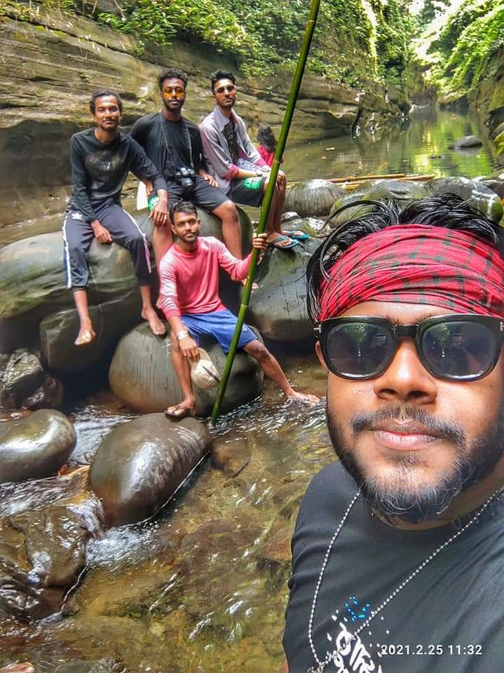
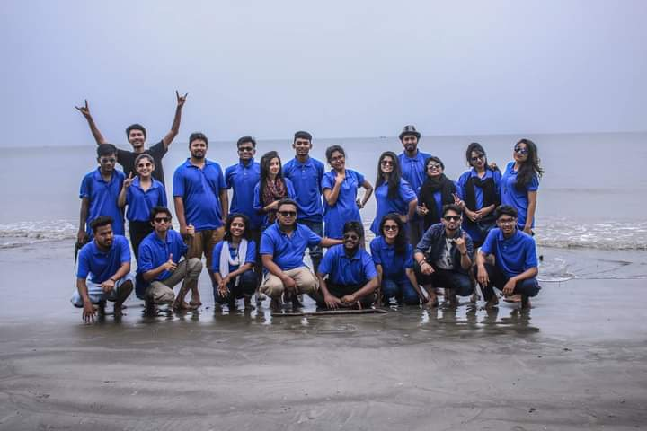
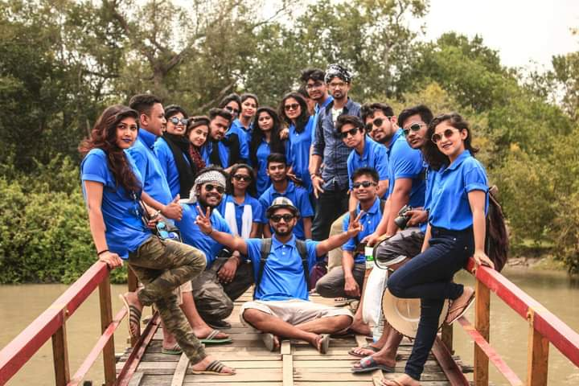
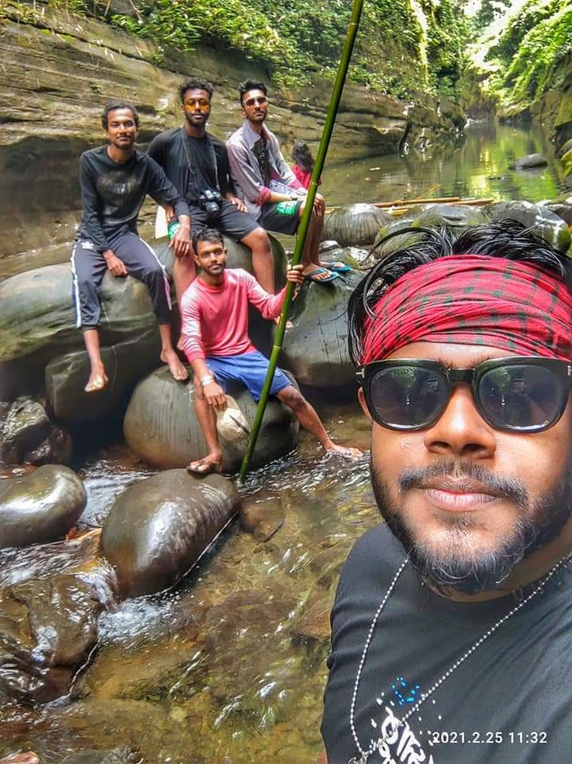
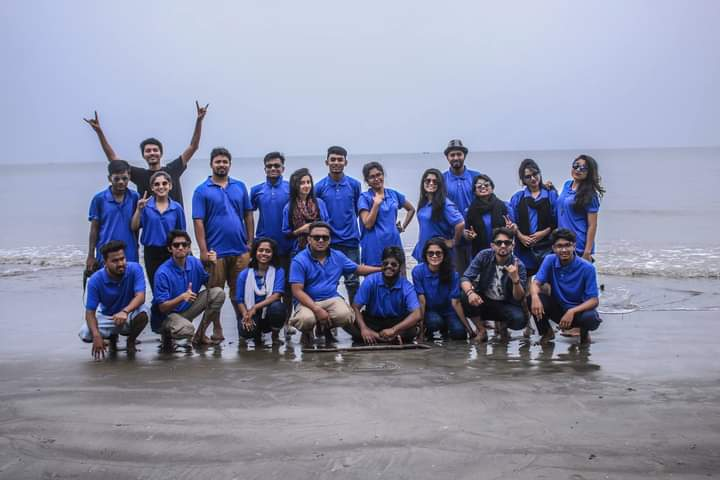
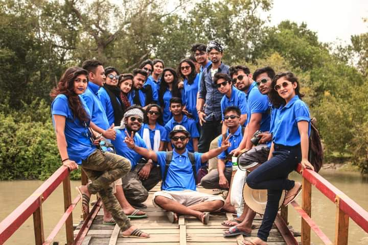
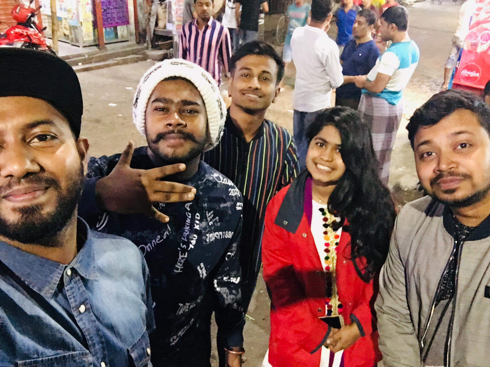
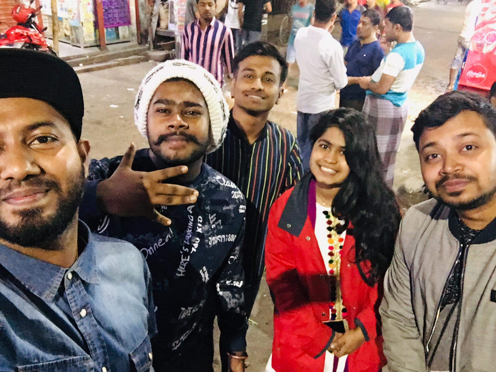

আমিই সেই কথকহীন বাউন্ডুলে উদ্ভ্রান্ত কবি
আমার এই ডায়েরীর পাতায় আমার কিছু ভালোলাগার, ভালোবাসার কথা এবং কবিতা লিপিবদ্ধ করা থাকলো। কখনো যদি তুমি মন খারাপের ছুঁতোয়, অন্যমনস্ক হয়ে অজানা কিছু পাওয়ার আসায়, আমার এই লেখাগুলো তোমার চোখে পড়ে, তবে কষ্ট করে লাইনগুলো পড়ে দেখো। হয়তোবা তোমার মন ভালো হয়ে যেতে পারে, নয়তোবা খারাপ মন আরো খারাপ হয়ে যাবে।


 






 
